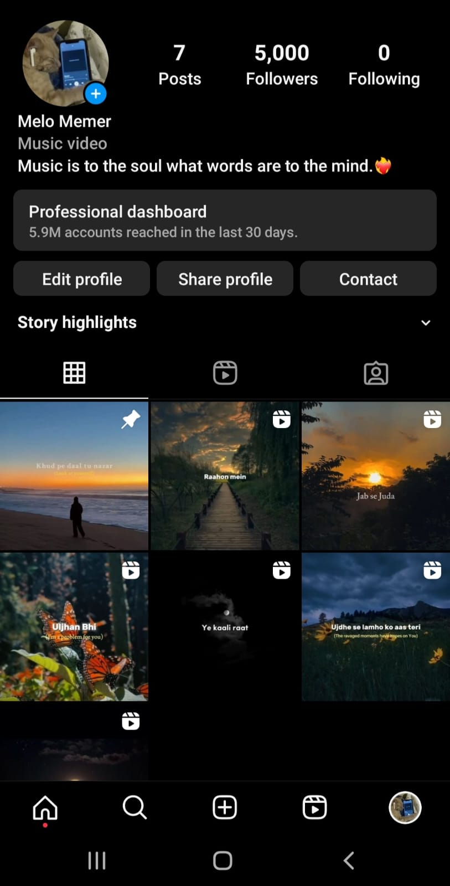
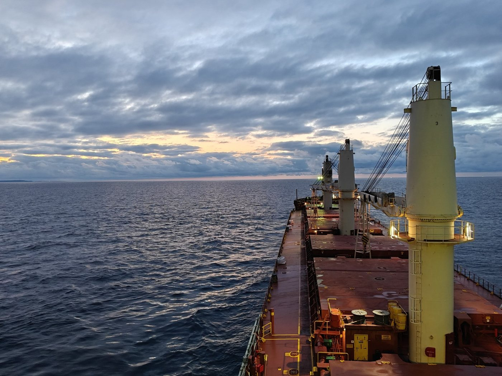
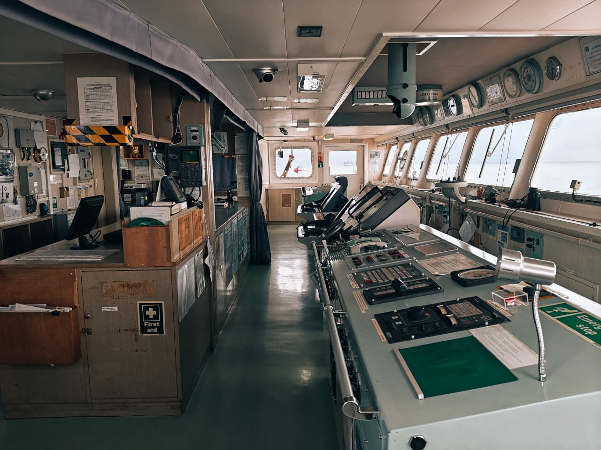
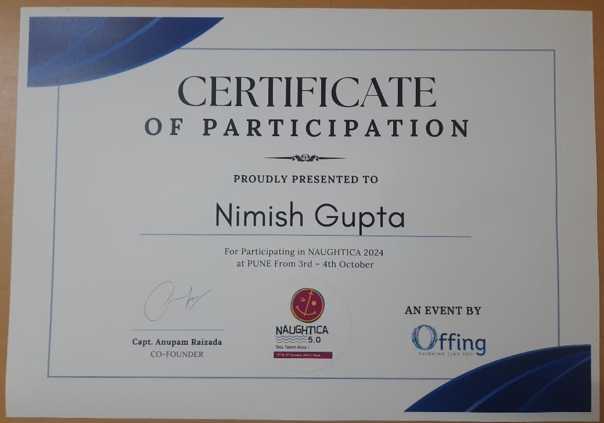

01
From selecting lyrical moments to publishing, I grew a music page organically to 12M+ views.
I bring together creativity, practical thinking and discipline, with experience across content creation, teamwork and hands-on professional environments. I enjoy turning ideas into action and learning through experience.
A LITTLE ABOUT HOW I WORK
01 / WHAT I BRING
A mix of creative work, research, execution and hands-on operational experience.
From selecting lyrical moments to publishing, I grew a music page organically to 12M+ views.
Contributed to concept, shot planning, camera angles and lighting for a one-minute film.
Compared suppliers, negotiated rates and helped run a food stall that sold out its stock.
Worked across deck duties and watchkeeping, with a focus on staying observant and reporting clearly.
02 / SELECTED WORK
A few examples of work, initiative and experiences that shaped how I think and operate.

Built an independent music page from zero to 9K followers and 12M+ views in around 1.5 months.

MV Federal Nakagawa · June–December 2025

A look inside the bridge environment aboard MV Federal Nakagawa.
Four-person team. Supplier research, price comparisons, negotiation and event operations.

Three-person team · Screened before an audience of 500+.
03 / EXPERIENCE
Anglo-Eastern Ship Management · MV Federal Nakagawa
Performed steering and night watchkeeping; assisted with bridge watchkeeping, deck maintenance, cargo watch, daily tank soundings, ballast operations, mooring arrangements and LSA/FFA maintenance. Reported a leaking and vibrating deballasting valve, after which the operation was paused and the valve replaced.
Melomemer · Instagram
Managed content selection, lyrical sections, sound mixing, reel creation and publishing independently.
Anglo-Eastern Maritime Academy
Managed and distributed sports equipment for my division and supported cricket tournament matches through umpiring and scoring. Team finished runners-up.
Four-person team
Researched bakeries, compared quality and prices, negotiated rates, designed the stall poster, managed stock and ran the pastry counter.
Naughtica · Pune
Contributed to a three-person team's one-minute short film through concept, shot planning, cinematography, lighting and editing.
04 / EDUCATION & LEARNING
Formal education alongside practical learning in different environments.
BBA in Digital Business and Entrepreneurship
Diploma in Nautical Science (DNS)
Class 12 · Physics, Chemistry & Mathematics · 88%
Class 10 · 88%
05 / SKILLS
Each skill is connected to something I have actually worked on.
WANT THE ONE-PAGE VERSION?
gnimish19@gmail.com · linkedin.com/in/nimish-g-ba4666245
I bring together creativity, practical thinking and discipline, with experience across content creation, teamwork and hands-on professional environments. I enjoy turning ideas into action and learning through experience.
Served aboard MV Federal Nakagawa. Performed steering and night watchkeeping; assisted with bridge watchkeeping, deck maintenance, cargo watch, tank soundings, ballast operations, mooring arrangements and LSA/FFA maintenance. Reported leakage and vibration at a deballasting valve; operations were paused, the valve was replaced the following day, and I assisted engineers.
Grew @melomemer from zero to 9,000 followers and 12M+ views in around 1.5 months through approximately seven organic posts. Independently handled content selection, lyrical sections, sound mixing, reel creation and publishing.
Contributed to a four-person team that generated over ₹12,000 in six hours and sold out its stock. Researched and negotiated with suppliers, compared quality and prices, designed the poster, managed stock and ran the pastry counter.
Worked in a three-person team on a one-minute short film about fear. Contributed to concept, shot planning, cinematography, lighting and editing. Screened before an audience of 500+.
Served on the academy sports committee; managed equipment and supported cricket tournament umpiring and scoring. Team finished runners-up. Represented school in cricket tournaments; earned Man of the Match after taking three wickets in a winning match. Member of school march-past contingents in 2019, 2021 and 2022, when the school won the annual Republic Day competition.
Certification: HubSpot Digital Advertising Certification · Sep 2026–Oct 2028
Content creation & strategy · Cinematography · Supplier research & negotiation · Event operations · Safety awareness · Maritime operations
06 / CONTACT
For opportunities, conversations and collaborations.